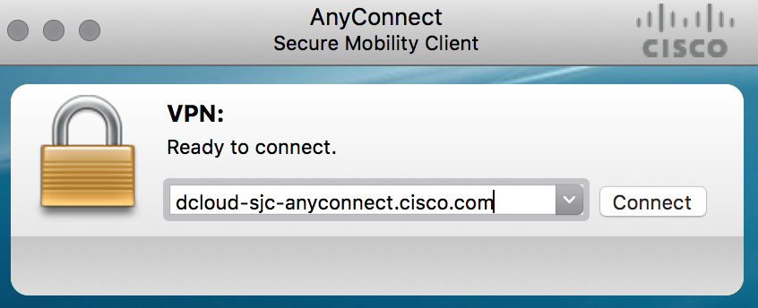
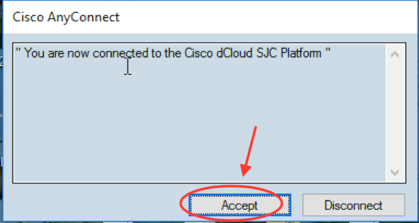
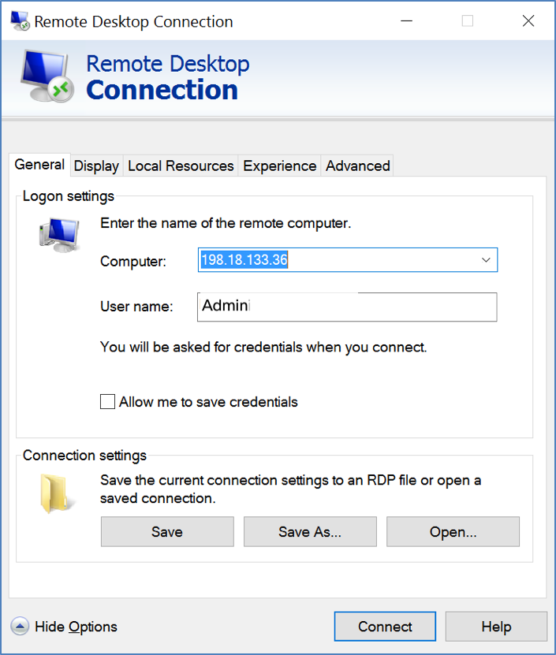

Your first task will log on to remote lab using VPN. At the end of this task, you will have a fully network connectivity to a remote server using Remote Desktop.
Step 1: Connect to lab using anyconnect VPN
You will connect to remote Lab using Cisco VPN AnyConnect client, as shown in below picture.
- Launch the Cisco VPN AnyConnect client from your PC
-
Enter the remote server for your pod as provided by Lab Speakers.
- This remote server will be
dcloud-sjc-anyconnect.cisco.comordcloud-rtp-anyconnect.cisco.com
- This remote server will be
-
The
usernameandpasswordcredentials for this VPN connection will also be provided by the lab admin
| Note: |
|---|
| Lab admins will furnish the credentials information to each participant. If you don't have this information please ask the lab speakers. |

Below is an example of user logging into a reference pod in dcloud-sjc-anyconnect.cisco.com:

-
Hit Accept when the prompt appears to accept the VPN connection login

| Note: |
|---|
| Credentials used in above screenshot are provided as an example only. Credentials for each pod will be provided by the lab speakers. |
Step 2: RDP to workstation
In this step, you will connect to the workstation with Remote Desktop (RDP) client on your machines. Use below details for this RDP session:
- Workstation/Computer:
198.18.133.36 - Username:
Admin - Password:
C1sco12345
Below screenshot is only an example for this RDP connection:

Note: above screenshot is provided as an example only.
Step 3: MTPutty and Browser
Once you have the RDP session to the remote workstation (Jumphost), then you will use MTputty client (pre-installed on the remote workstation) and Chrome Browser to connect to all devices in this lab.
MTputty is already installed on the Desktop of the workstation where you connected using RDP. Run this application by clicking on the icon on the desktop: